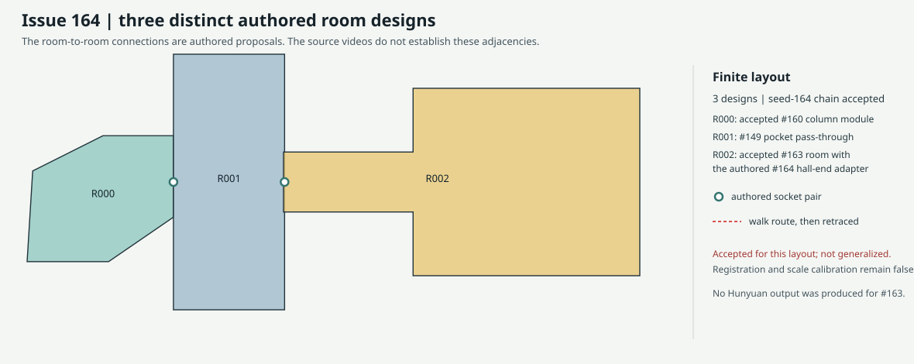
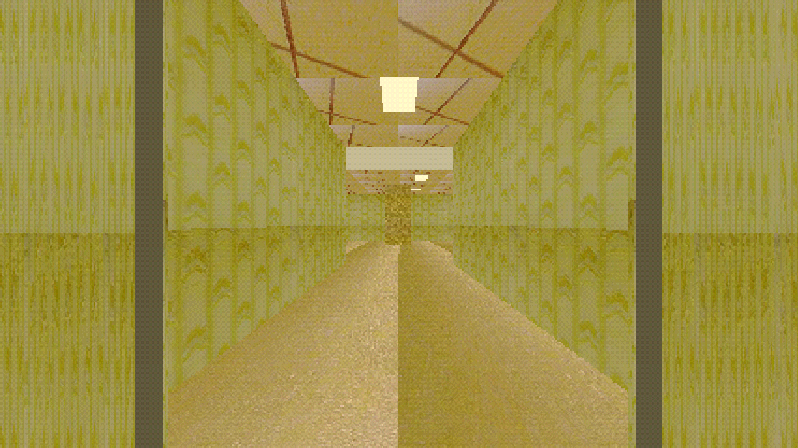
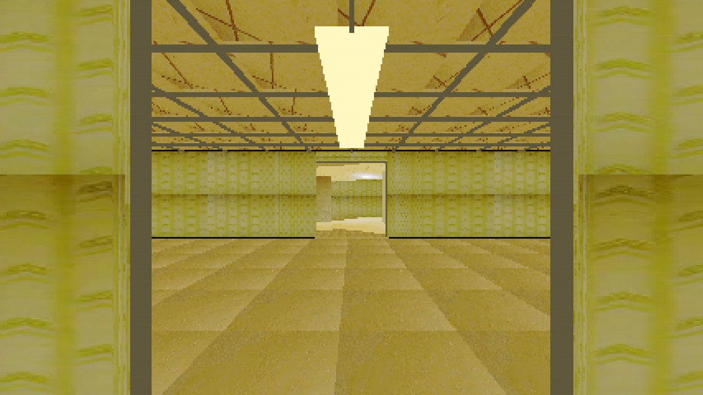
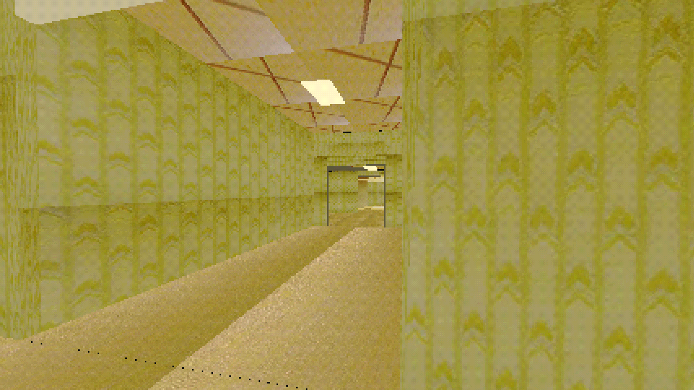
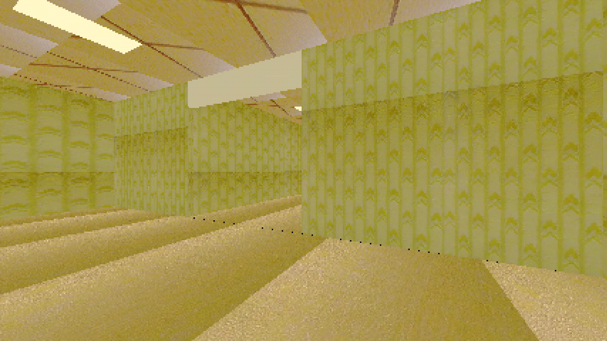

Issue 164 | three-room walkthrough
Operator accepted this exact seed-164 chain as coherent and walkable. The new connector is specific to this authored layout and has not been generalized to other videos.
The chain contains three distinct designs, two traversable connection pairs, and one shared player. #163 is an authored source-textured room. No Hunyuan output was produced. Registration and scale calibration remain false.
Layout

Connection review captures
The first two views show the new connection from opposite sides. The remaining views show the new room entrance and its authored column.




Walkthrough
From the workspace root:
godot4 --path godot_walk --rendering-driver vulkan --resolution 1280x720 res://scenes/issue164_three_room_walkthrough.tscn
Use WASD and mouse to walk. Press R to reset to the safe spawn.
Operator review
Accepted: the pocket-to-third-room doorway feels coherent and walkable. The operator identified this assembly as the target for a repeatable workflow across different input videos. This decision does not establish source-video connectivity or calibrated scale.
See REPORT.md and COMMANDS.md for test and resource evidence. Contact sheet: contact_sheet.jpg.